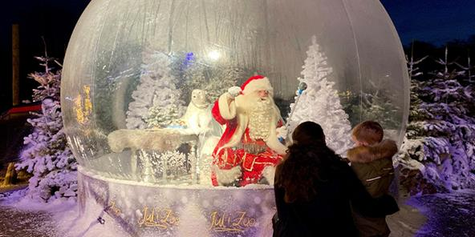

Mød Julemanden
På alle åbningsdage vil der være mulighed for at møde Julemanden på coronasikker vis, I hans julebobel
På alle åbningsdage vil der være mulighed for at møde Julemanden på coronasikker vis, I hans julebobel
Mette Blomsterberg vil være at finde på Zoofari scenen på udvalgte dage i November og December (se programmet).
Her kan du høre om hendes personlige juleunivers, og få signeret hendes nye julebog
En af nyhederne I år er juleværkstedet, hvor lokale virksomheder er samlet under et tag, for at præsentere deres produkter, og samtidig stå klar med julehygge.
Art by me giver dig bla. mulighed for at male din egen keramik julepynt.
Endnu en nyhed, er det gamle apotek som rykker ind i grotten sammen med søløver og pingvinerne. Her finder du Jul I Zoo's eneste julebutik.
Du kan naturligvis købe mad og lækre julegodter i Zoos spisesteder.
I Juleværkstedet kan du blandt andet hygge med vafler, gløgg og æbleskiver. Rundt om i boderne kan du lade dig friste af søde julesager, og på Skovbakken serverer vi en lækker julebuffet med hyggelige retter til både børn og voksne.
Julebuffeten serveres to gange hver aften kl. 17-18:30 og kl. 18:45-20:15, vi anbefaler at du booker bord på forhånd.